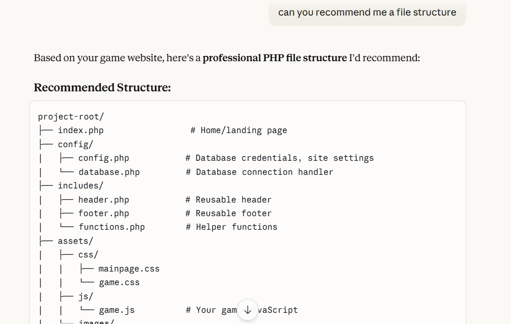
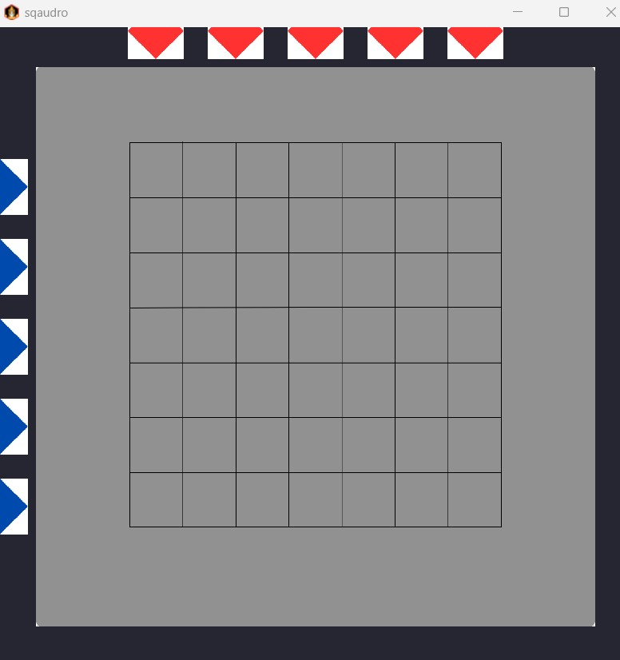

8/4/2026
Hi for today I have cleaned up the file structure for this page as well as set up the file structure for the game.
Will link the game to the file soon. As of right now there isn't a CSS for this page, I will update the CSS soon.
I will also be attaching some images of the work that I will be doing, including AI help, progress, code, file structure and more.
I will be updating this page regularly so do check back often to see the progress of the game and my work.
I will also be posting some of the games that I have made in the past as well as some of the games that I will be making in the future.
Hope you will enjoy it and have fun playing it when I am done.
File Structure Setup

This is the image of the file structure
Current Issues
There is a lot of issues that I am seeing right now. There is no header and footer for this page, which I will be updating soon.
It is also not user friendly in which currently it is formatted to PC size but the CSS will be funny if it is run on mobile.
Currently these are all the issues I am seeing so far as of right now.
9/4/2026
I made some great head-way on my game development today. I've been collaborating with Claude, which has been incredibly helpful for streamlining the process.
Visual Design Progress
I have made significant progress on the game's visuals today, completing the board design in Canva Draw along with the assets for the movement indicators and pieces.
Upon importing and initializing these images, I encountered scaling issues where the asset dimensions did not align with the application window.
After collaborating with Claude to identify the cause, we determined that the most efficient solution was to adjust the window dimensions to properly accommodate the asset resolution.
Refactoring for Better Code Structure
I identified that the initial code provided by the AI violated the Single Responsibility Principle (SRP) by consolidating the board logic, piece attributes, and movement mechanics into a single file.
Recognizing that this structure created high coupling and would make the code difficult to maintain, I decided to refactor the codebase into distinct modules.
This approach aligns with core OOP principles, specifically Encapsulation and Separation of Concerns, ensuring that modifications to one component do not negatively impact the rest of the system.
Implementation & Documentation
Subsequently, I began implementing the code with the previously mentioned structural improvements.
As I typed the implementation, I took the opportunity to reinforce my knowledge and clarify technical concepts I had studied.
I also prioritized adding detailed comments to the code, both to verify my own understanding and to establish the habit of maintaining clear documentation.
When I eventually encountered a runtime error involving the 'Entity' file, as shown in the attached terminal screenshots, I attempted to troubleshoot the issue independently.
After successfully identifying and resolving the bug, I was able to run the program.
Final Result

Successful troubleshooting - program fully operational!
As shown in the final image, the troubleshooting was successful, and the program is now fully operational.
The board, pieces, and movement indicators are rendering as intended within the modular architecture.
This marks a significant milestone in the development process, as the core visual and structural components are now working in harmony.
Current Issues
currently some of the unfinished issues are the board and pieces not looking nice enough.